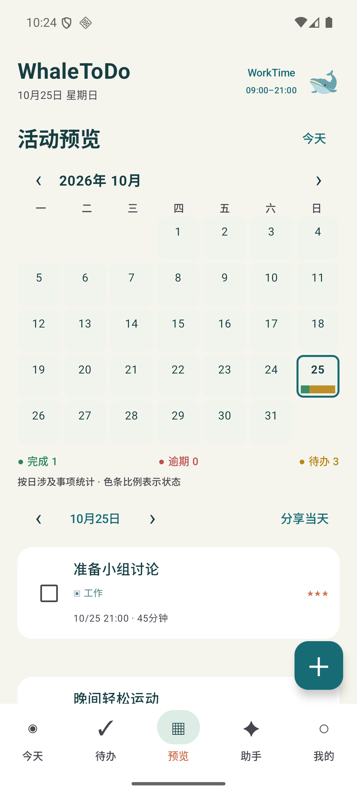
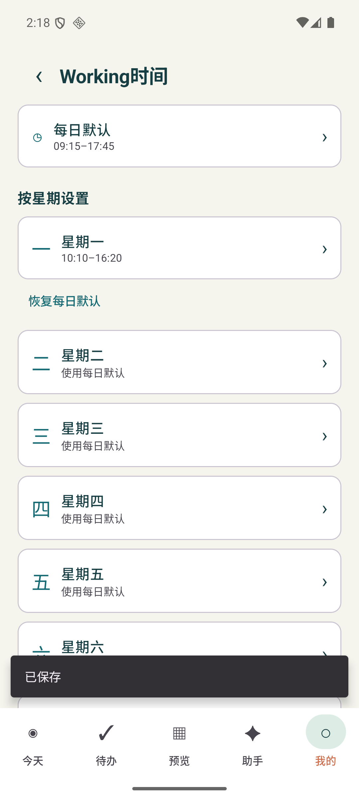
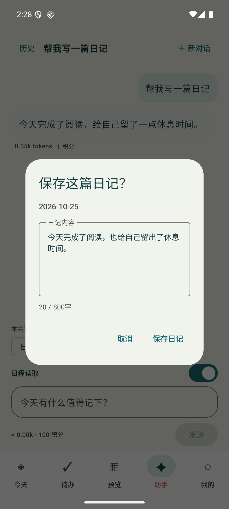

09:41▰ ▰
WhaleToDo 🐋
给今天，留一点从容。
我的收集箱 页面体验
- 读完那一章书30分钟
- 傍晚出去走走20分钟
试着记下一件事，仅保留在此页面。
◉ 今天✓ 待办▦ 预览✦ 助手○ 我的
让想法，慢慢成为行动
不用把生活塞进一张清单。先记下想做的事，
再为重要的事，找到合适的时间。
0.5.2-preview.1 · 本地基础功能无需账号 · Android 8.0+
给今天，留一点从容。
试着记下一件事，仅保留在此页面。
从想到，到做到
从快速记下，到安排与复盘。
一句话放进收集箱。时间、工时和重要度，想清楚后再补。
选择今日 WorkTime，手动固定时段或预览自动计划。清单、日程和活动月历，看清事情落在哪里。
完成、自评，或把一件事分享出去。重启之后，你的记录还在。
在应用里，慢慢理顺
真实应用界面 · 截图使用合成数据



一起做得更好
本地记录、手动与自动安排、预览日历、打卡、日记与个性化设置已可体验。助手提供模式与提案界面；当前安装包尚未接通账户和在线 AI。提醒、图片分享、邮件和支付仍在完善，具体状态随版本说明公开。
WhaleToDo for Android · 0.5.2-preview.1
独立签名预览版，与原体验包并存，保留原应用数据。
本地记录与安排可离线使用；APP 账户与在线 AI 尚待接入。
下载后对照以下 SHA256 或校验文件核对。首次安装按手机提示允许本次安装来源。以后用同签名预览版覆盖升级；请勿卸载原应用处理签名冲突。两个应用数据独立，不自动迁移。
校验值见下方校验文件